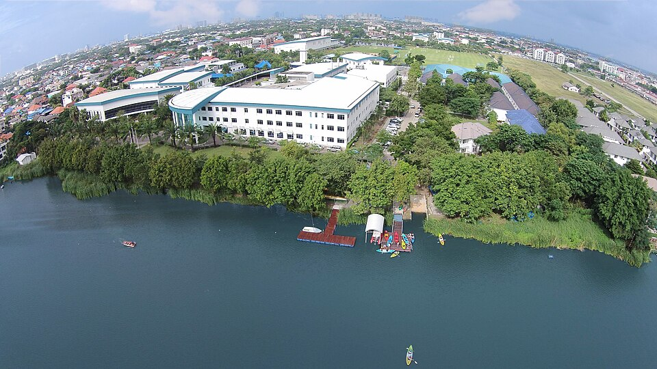

해로 인터내셔널 스쿨 방콕 캠퍼스 · 사진: Liz Hammond / Wikimedia Commons, CC BY-SA 4.0
해로 인터내셔널 스쿨 방콕(Harrow International School Bangkok) — 기숙이라는 선택지가 있는 학교
1. 해로 인터내셔널 스쿨 방콕은 어떤 학교인가
· 개교 — 1998년에 문을 연 것으로 알려져 있습니다. 영국 해로 스쿨(Harrow School)의 이름을 쓰는 아시아 최초 학교로 알려져 있습니다.
· 위치 — 방콕 북부 돈므앙(Don Mueang) 지역. 시내 중심가가 아니라 넓은 부지에 호수를 낀 형태로 알려져 있습니다.
· 성격 — 남녀공학이며, 통학(day)과 기숙(boarding)을 함께 운영하는 것으로 안내되어 있습니다.
· 학년 — 유아 과정부터 Year 13(고등 마지막 학년)까지 한 학교에서 이어지는 것으로 알려져 있습니다.
· 교육과정 — 영국 국가교육과정을 따릅니다. 유아 과정(EYFS)에서 시작해 Cambridge IGCSE를 거쳐 Cambridge A-Level로 마무리되는 흐름으로 알려져 있습니다.
· 수업 언어 — 영어입니다. 프랑스어·중국어·일본어·태국어 등 외국어 과목이 개설되는 것으로 안내되어 있습니다.
· 구성 — 여러 국적의 학생이 함께 다니는 다국적 구성으로 알려져 있습니다.
※ 학비·정원·합격률·재학생 수 등 해마다 바뀌는 수치는 이 글에서 다루지 않습니다. 개설 과정·기숙 대상 학년·입학 규정도 학교 방침에 따라 달라질 수 있으니 학교 요강을 직접 확인하세요.
2. 방콕 네 학교 — 무엇으로 갈리는가
방콕에서 학교를 고민하실 때 가장 먼저 정리해야 하는 건 학교의 명성이 아니라 아이가 어느 시험으로 대학에 갈지입니다. 그 한 가지를 정하면 후보가 절로 줄어듭니다.
| 항목 | 해로 방콕 | 파타나 | NIST | ISB |
|---|---|---|---|---|
| 계열 | 영국식 | 영국식 | IB | 미국식 |
| 중등 시험 | IGCSE | IGCSE | IB MYP | 미국식 내신 |
| 고등 마무리 | A-Level | A-Level | IB 디플로마 | 졸업장 + AP·IB 선택 |
| 기숙 | 운영 | 통학 중심 | 통학 중심 | 통학 중심 |
| 위치 | 북부 돈므앙 | 동부 방나 | 시내 수쿰윗 | 북부 니차다타니 |
※ 각 학교의 개설 과정·기숙 운영·위치는 해마다 바뀔 수 있습니다. 지원 전 각 학교 요강을 직접 확인하세요.
표에서 보시듯 해로 방콕과 파타나는 같은 영국식입니다. 그러니 이 둘 사이에서는 커리큘럼으로 고를 수가 없고, 위치(통학 시간)와 기숙 운영 여부가 실질적인 기준이 됩니다. 반대로 IB로 가고 싶다면 해로 방콕은 후보에서 빠집니다. 이 정리를 먼저 해 두면 학교 설명회를 몇 군데나 돌지 않아도 됩니다. → A-Level 과목 선택 가이드 · IGCSE 과목 선택 가이드
3. 한국(주재원) 학생이 겪는 어려움
· Year와 Grade가 어긋난다. 영국식 학교는 Year로 셉니다. 한국에서 초등 6학년을 마친 아이가 미국식 G7이 아니라 Year 7에 배치되면서 "한 학년 내려갔다"고 느끼는 경우가 자주 있습니다. 실제로는 세는 방식이 다른 것인데, 이걸 모르고 무리하게 올려 달라고 요청하면 아이가 가장 힘들어집니다. → 국제학교 학년 체계 총정리
· IGCSE는 "과목을 고르는 시험"이다. 한국식으로는 전 과목을 다 하는 게 성실한 것이지만, IGCSE는 Year 9~10에 과목을 고르고 그 조합이 A-Level로 이어집니다. 이때 잘못 고르면 Year 12에 가서 원하는 A-Level 과목을 못 듣는 일이 생깁니다.
· A-Level은 과목 수가 적고 깊다. 보통 세 과목 안팎을 2년간 깊게 파는 구조로 알려져 있습니다. 한국 학생은 "과목이 적어 편하겠다"고 생각하다가 한 과목이 흔들리면 대체할 곳이 없다는 걸 뒤늦게 깨닫습니다. 폭이 좁은 만큼 과목당 위험이 큽니다.
· 영어로 된 수학. 계산은 되는데 알지브라 용어가 영어이고, 서술형에서 풀이 과정을 영어 문장으로 적어야 단계 점수를 받습니다. IGCSE·A-Level 수학은 특히 답만 맞아도 과정이 없으면 점수가 깎이는 구조입니다.
· 통학 거리. 돈므앙은 방콕 북쪽입니다. 주거지를 시내 쪽으로 정하면 등하교가 길어집니다. 학교를 먼저 정하고 집을 정하는 편이 아이의 저녁 시간을 지킵니다.
· 기숙을 쓰면 집의 관리가 사라진다. 이게 다음 절의 핵심입니다.
4. 기숙(보딩)이라는 선택지 — 무엇을 해결하고 무엇은 못 하는가
해로 방콕이 방콕의 다른 학교와 가장 다른 점입니다. 기숙은 초등 고학년 이상부터 받는 것으로 알려져 있습니다(대상 학년은 학교 안내를 확인하세요). 주재원 가정에서 기숙이 후보로 올라오는 상황은 대체로 셋입니다.
· 발령이 먼저 끝나는 경우 — 부모는 귀국하는데 아이는 A-Level 2년을 마쳐야 하는 상황. 영국식은 Year 12~13을 쪼개기가 특히 어렵습니다.
· 부모가 태국 안에서 지방으로 옮기는 경우 — 학교는 유지하고 싶을 때.
· 형제의 학년이 크게 벌어진 경우 — 통학 동선이 둘로 갈릴 때.
기숙이 해결해 주는 것은 분명합니다. 학교를 바꾸지 않아도 되고, 통학 시간이 사라지고, 저녁 학습 시간이 규칙적으로 확보됩니다. 다만 해결해 주지 않는 것도 분명히 알고 들어가셔야 합니다.
· 영어 실력은 기숙이 올려 주지 않습니다. 기숙사는 생활 관리 공간입니다. 학습 영어(교과서를 읽고 에세이를 쓰는 영어)는 따로 만들어야 합니다. → EAL(영어 지원 프로그램) 완전정리
· 과목 선택을 대신 결정해 주지 않습니다. IGCSE·A-Level 조합은 가정이 판단해야 할 문제로 남습니다. → 진학 카운슬러 활용법
· 성적표가 집에 늦게 도착합니다. 아이와 매일 얼굴을 보지 않으면, 무너지는 과목을 알아차리는 시점이 한 학기 뒤가 되기 쉽습니다. 기숙을 쓰신다면 성적표와 과제 기록을 부모가 직접 정기적으로 확인할 통로를 입학할 때 함께 정해 두세요. → 성적표 읽는 법
5. 그래서 이렇게 준비합니다
🗺️ 먼저 — 시험을 정하고 학교를 좁힌다
순서가 중요합니다. 학교 설명회를 돌기 전에 A-Level로 갈지 IB로 갈지를 가정에서 먼저 이야기해 보세요. 영국·홍콩·싱가포르 대학을 크게 보신다면 A-Level 쪽이 익숙한 길이고, 진로가 아직 넓게 열려 있다면 IB의 폭이 편할 수 있습니다. 이 결정이 방콕 네 학교 중 어디를 볼지를 거의 정해 줍니다. → 국제학교 입학 준비 총정리
📖 영어과외 — 회화가 아니라 "학습 영어"
편입에서 문제가 되는 건 말이 트이느냐가 아니라 교과서를 읽고 에세이를 쓰는 영어입니다. 주장 → 근거 → 분석의 뼈대를 세우고, 과목별 지시어(analyze·evaluate·justify)가 각각 무엇을 요구하는지부터 정리합니다. IGCSE 영어는 특히 지시어별 답안 길이와 형식이 정해져 있어서, 내용을 알아도 형식을 모르면 점수가 남습니다. (영어 공부법 참고)
📐 수학과외 — 영어 용어와 "show your work"
알지브라·지오메트리 개념을 한국식 풀이와 영어 용어로 연결하고, 풀이를 영어 문장으로 적는 습관을 들입니다. IGCSE·A-Level 수학은 단계별 배점이 뚜렷해서 이 습관이 그대로 점수가 됩니다. (알지브라 공부법 참고)
🧭 Year 9 안에 과목 지도를 그린다
IGCSE 과목 선택은 A-Level 과목 선택의 예약입니다. Year 9 안에 "가고 싶은 A-Level 세 과목 → 그러려면 IGCSE에서 무엇을 들어야 하는지"를 거꾸로 적어 보세요. 이 한 장이 Year 12의 혼란을 대부분 막아 줍니다.
🏫 기숙을 쓰신다면
입학 상담에서 성적 확인 통로를 함께 정해 두세요. 과제 플랫폼 계정, 학기별 상담 일정, 교과 선생님과 연락하는 방법 세 가지면 충분합니다. 이 세 가지가 있으면 멀리 있어도 늦게 알아차리는 일이 줄어듭니다.
6. 방콕의 강점 — 시차 두 시간의 화상과외
태국은 한국보다 두 시간 느립니다. 방콕 오후 4시가 한국 오후 6시라, 아이의 방과 후 시간과 한국 강사진의 저녁 수업 시간이 자연스럽게 겹칩니다. 기숙사에 있는 학생도 저녁 학습 시간에 맞춰 수업을 잡을 수 있습니다. 방콕의 한국계 학원은 회화나 한국 교과 보충 중심인 곳이 많아, 영어로 된 수학 서술과 IGCSE·A-Level 답안 형식을 한국어로 짚어 줄 곳을 찾기가 쉽지 않습니다. 아이의 실제 과제와 채점 기준표를 화면에 놓고 "어느 항목에서 깎였는지"부터 보는 방식이 가장 빠릅니다. 방콕 지역 사정은 방콕 수학학원·영어학원 고르기에 정리해 두었습니다.
정리
해로 인터내셔널 스쿨 방콕은 1998년 개교로 알려진 방콕 북부 돈므앙의 영국계 학교이고, Cambridge IGCSE → A-Level로 마무리되는 구조에 기숙이라는 선택지가 함께 있는 곳으로 알려져 있습니다. 방콕에서 이 학교를 볼 때 기준은 두 가지입니다. ① A-Level로 갈 것인지 — 아니면 후보에서 빠집니다. ② 기숙이 필요한 상황인지 — 필요하다면 방콕에서 이 학교의 자리가 뚜렷합니다. 다만 기숙은 생활을 맡아 주지만 영어와 과목 선택을 맡아 주지는 않습니다. 30분 무료 상담으로 우리 아이가 지금 어느 갈림길에 있는지부터 함께 짚어 보세요.